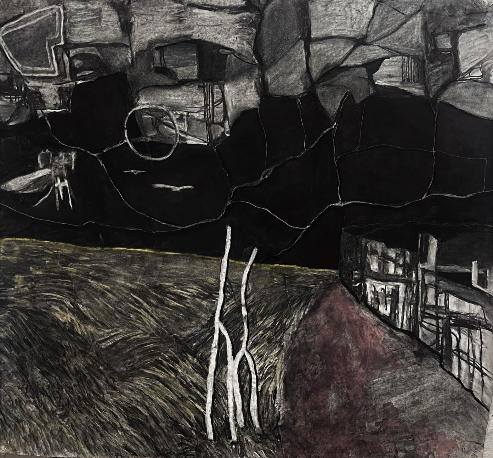
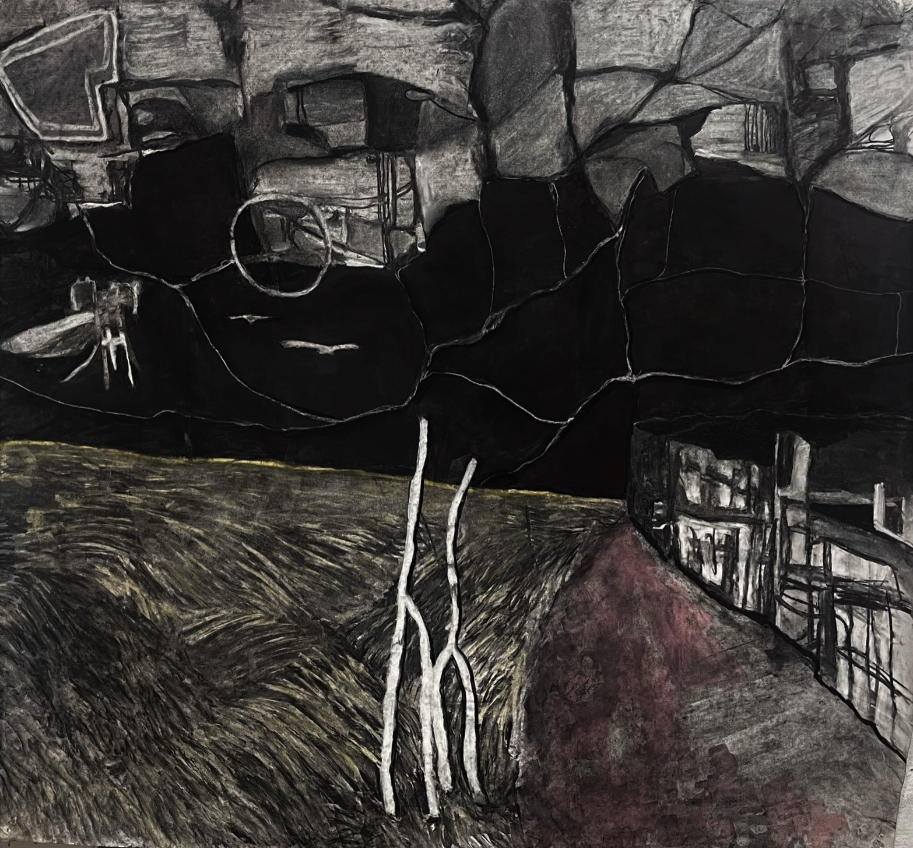

(4.30.2023) Finished Replay. Having fun with my second squib.
(4.24.2023) Read The Picture of Dorian Gray and Information doesn't want to be Free, both of which I enjoyed. My classes are all wrapping up their lectures, so I get to spend time studying and working on my final projects which is very rewarding. I'm going to prioritize my Deep Learning project, my Lexical Semantics squibs, and my metaethics final paper. I don't think my stats notes are really worth covering further. Reading my morality notes really confuses me because of how dense it is but I'd still like to publish something from it.
What I really love and want to explore with linguistics is the mechanics of abstraction. Not a foreign language, a fixed abstraction, but absolutely the math and absolutely the philosophy of it. To look at something and see all of its truly different interpretations. When I was little my ideas of mathematical kinds were were very naive. I would think of x and 2x just as fundamentally different as x and x^2. I had no imagination (does anyone?), I adored linearity and simple geometry because it was easy to check my work.
On the balance, I think I am learning to check my naivete. Accepting that my intuition is simultaneously my strongest and least productive tool (but almost exactly my source of aesthetic joy). If you always explore you will never exploit.
I made the Attleboro train with less than a minute to spare today!
(4.17.2023) But where did the thinking/feeling distinction go?
(4.13.2023) The bound reading is the sloppy reading. The free reading is the strict one.
(4.12.2023) So excited for our DL project.
I finally understand injectivity to mean NO OVERLAP and surjectivity to mean COVER.
This is roughly like how a partition (bijection) puts all its elements (surjective) in disjoint subsets (injective).
Every probability distribution is a generative model!
 The World as Will and Representation, Vol. 1 by E. F. J. Payne
The World as Will and Representation, Vol. 1 by E. F. J. Payne
Schopenhauer claims that this book is all a single thought unfolding, which is not really true.
The central theme of the book would probably be something as simple as "the world is will as representation".
Schopenhauer takes a strategy not unlike Descartes, where he deduces from a single fact a wide variety of things about the world. He basically says that there is only one thing with a truly intelligible internal representation, the human will, and that the body is the only link between the will and the real world. Because the will is what drives him, he believes that the world should all be thought of as a single, indivisible representation of the will. The will is before space, time, and causality; it is the thing-in-itself.
Here's an question I had: Schopenhauer believes the will is before everything. This includes the concept of numbers. So how is it true that the will can be said to be one, indivisible, unique? The really cool thing is that uniqueness proofs are done without ever *counting*. An object x has properties P(x). To prove it is unique, we show that for all x' such that P(x') is true, x' is actually equal to x. We need not consider anything but the properties of single objects.
Objections mainly to the argument of suitability (this was written before Darwin and Schopenhauer makes some very dubious claims about ecological niches), government, and the passages on pain and boredom. The central claim is in the two hundred pages and the rest doesn't really follow.
View all my reviews
Diffusion models are like fossil fuels. They borrow from the future of digital content (the degradation to pure corrupted noise) to enrich the present, incurring time debt.
(3.22.2023) Is there a way to generate psuedorandom numbers that you can do in your head? This is an appealing and testable project.
(3.22.2023) Happy with my work today on space logic lemmas. Want to start working on our pix2pix project, and I've been putting off writing a squib for lexical semantics! I started off strong with an analysis of "unalive" but don't really know where to go beyond saying "this word is a verb not a noun". I should go look at other "un" prefixable words, and maybe at the scalar implicature of "un" applied to those words. There's certainly "half-alive". Something REALLY cool I noticed today is that the scales for "very possible", "possible", "very probable" and "probable" are different. If it's possible to integrate this to the squib that would be fun! I also spent a bunch of time thinking about how adjectives are either relative and individual origins, but eventually concluded that okay fine they are still intersectional not subsectional. I just dislike the complexity.
(3.19.2023) Maybe 1/3rd of the way through the world as will and representation. My notes look nice but are incomprehensible; same with most of my projects at the moment. Not sure how much of this is an increase in my own expectations versus genuine apathy. I should be doing more...
(3.14.2023) Idea: app for runners me that doesn't just give you the closest bus route back, but the closest one that doesn't involve doubling back. It also calculates the arrival time closer to my running pace.
(3.11.2023) Alright, here we go.
(3.10.2023) The reason why I've fixated on word vectors was that they had a power of
unpredictability to them. Words are incredibly compressed, forceded meaning -- vectors have a power
to them that is like a summer storm. But deep learning is not about creating vectors, it's about
making predictions. And making predictions means being right. It requires a set of questions and a
set of answers. It requires predictability.
Vectors are the essence of all that is unpredictable and violent and messy about a language. And
their utilization is only as a stopgap for the predictable and the totally routine. It is harnessing
lightning in a bottle to power grain mills. I love the violence and the totally adrift. I love the
magic.
Can I make room in my heart for something else? It's hard when all you've done seems to tell you
that it can go on.
(2.21.2023)
Went to boston and saw some cool marc chagall pieces. Read
Columbine,
The Perfect Storm, finished
Butcher's Crossing, halfway through Kafka's
The Castle which REALLY makes me want to find this animated video of a middle-aged office worker
opening a series of doors... I swear it's real. I think it was shown at a science fair about responses
to stress.
'artifact' was created by harvard anthropologists to encompass artificial objects, first attested in
1884.
"THE ISOLATION OF SOUTH AMERICA FOR ABOUT 75 MILLION YEARS LED TO THE EVOLUTION OF BIZARRE ANIMALS"
Columbine, Dave Cullen: "Love was the most common word in Dylan's journal."
(2.13.2023) 00._. new laptop is awesome! finished the power and the glory. DL homeworks are
really interesting, I'll try to put some of my notes up here. ?
https://open.spotify.com/track/5e8twrEguHMuCHLx9jYStJ?si=93ffd32b2c4c493c )(
https://open.spotify.com/track/4Tzw9IdZbVyzmpWrvsGaNX?si=4888e18f87bd4dac
(2.2.2023) and even at an indefinite end there is an instinctive urge to pull oneself forwards
https://open.spotify.com/track/5ez8Y6HHopl2qNYowoBsKm?si=f75206fb6b73456d
(2.1.2023) Well, Hack@Brown didn't go well, but I'm glad I went at all! My classes are so exciting:
lexical semantics, proofwriting, deep learning, morality, and stats (with theory!). I will have to
focus more in the next few weeks. Reading Man and his Symbols, The Power and the
Glory, some theory books from RISD, and still Butcher's Crossing.
Providence is beautifully austere, we've had a string of cold and sunny days and I discovered a
bridge that spans a slice of the world yesterday.
(1.26.2023) Writing the BERT embeddings to file has been running for 7 consecutive days, but we're
almost done. Hopefully I can apply stable matching on the neighbors to get a real graph.
New year, new Gooreads goal; Read Modern Man in Search of a Soul by C.G. Jung, an internet
image book, The Windup Girl, Shadow and Claw, No Country for Old Men, and
Stoner by John Williams. Stoner is an amazing book.
Hack@Brown is coming up!
(1.20.2023) I changed my mind, this format works fine. Just have to restabilize it.
(12.23.2022) College is hard :)
(10.3.2022) College is fun!
(7.27.2022) I got COVID lol. I want to rewrite this website again because I'm not happy with a lot of
the content. I realized that most of the separate .html files are older works and that I actually
enjoyed the previous format a good amount, but I still want to have some visual non-gridified
aesthetic.
(7.19.2022) I have this idea that solves the multiple meanings problem with language. Given four
equidistant points from a center point, they form a tetrahedron in 3D wordspace where each of the
points is at the intersection of three planes of meaning. This also generalizes to higher
dimensions, but with my current script producing four point/word/vectors I have
moneyball luncheon proponent alumna
belated position circumvented existential
neutropenia crimping invisible marsupial
...
, where there are four meaning-planes, formed by taking three of the four words. Running this overnight
and checking results then.
(7.15.2022) Presented on tSNE language maps and then got some interviews done.
Two delicious coincidences I've noticed recently.
The first one is the phrase "sign down". There are so many associated meanings (sign up,
write down, sign in, write up) that you'd expect this phrase to suggest something, and yet it
is a barren wasteland. Maybe "sign down (here, below)", but why not just "sign (here, below)"?
The second is that there are two major philosophies based on spoons that nicely complement
one another. The first is "spoon theory", or only having a certain number of spoons in a drawer
(representing mental energy), and the second is The Matrix's "there is no spoon", which is a
post-scarcity declaration of anything being possible. Both make sense; taken together, it is
actually a○n expression of the content/form distinction.
(7.14.2022) Paired on clusters for tSNE maps of word2vec... got some clusters with k-means, then
changed to DBSCAN which works surprisingly well, and the sklearn implementation makes it easy to
assign words to clusters. The way DBSCAN works is that it looks for cluster cores, which at the
current settings are two points (words) that are with a distance of 0.3 and with at least 1 neighbor
(this is good for isolating extremely close vector pairs, like "map" and
"maps"). Here's a bigger version
that probably won't load
(7.14.2022) Finished Red Mars and short stories, made some progress on the rest. Today
reentering the pairing pool, otherwise revising website.
(7.11.2022) At home, working intermittently on various things. Reading a book on the topography of
seattle, a collection of japanese short stories, man is the measure, the Dawn of Everything, red
mars, and a little bit of graph theory.
(7.6.2022) Spent the day walking around portland. I wanted to cross the border but it is not
accessible to pedestrians. Did cross St. John's and Fremont bridges. Yesterday went to Powell's and
read a bunch of picture books, and attended long NORC call from pioneer square.
(7.3.2022) Minecraft is so fun
(6.30.2022) Went to some chats with new Recursers, and readying a fun presentation for tomorrow on
APL. Made this kind of scaffold (click to advance),
experimenting with d3 as a tool for making slideshows. NORC is moving me from Amerispeak to GSS,
which is awesome.
(6.29.2022) Learned some APL, worked on socketio & eventlet, modernized JS on golf.
(6.28.2022)
(today, yesterday) updated word.golf to use XML http requests between prompts, creating a seamless
no-reload experience. The backend code at this point looks terrifying, and there is a display bug
where the first word isn't recorded, but it is a significant improvement for the UX :) I also shut
down the MySQL database and any queries to it, in preparation for moving to another platform. I will
have to do a lot more work to improve the code.
(weekend, last week) Finished Tapestry #2,
a 50x51 grid of ImageNet averages sorted by semantic similarity. In general these images look pretty
muddled, but there's a painterly quality to it that I really like. Will continue to experiment with
this.
Worked on a flask socket.io and eventlet server.
Started learning Pixi.js, the library that tetr.io is built off of, and APL. Watch this video. Symbols are so cool.
(6.24.2022) I can't shake the feeling that my site is actively hostile to thoughtful blog pieces now.
Anyways, I should probably go work on golf or something. I've been averaging images from Imagenet
with the squared root mean method and am about 1/3 of the way done, and basically procrastinating
otherwise. Dataclasses are cool, __name__ == __main__ for runnable scripts, multiprocessing, os,
numpy is really fast, and logging, timeit, dict and set comprehension. AHDNLNDLSVD
(6.15.2022) Had a lot of fun this morning setting up an imagenet tapestry at https://www.eric-xia.com/imagenet .The process for
making these grids has become very streamlined. First you choose a lump of clay (a base set of word
embeddings, 40-50k words) and then you carve away the words you don't need (imagenet's categories
share around 2,500 words with word2vec, for the most part nouns: "ball", "sailboat", "pliers",
"raccoon") you smooth it out with tSNE by going from 200 dimensions to 2, and then you shape it into
a square grid (50x50)! Finally for this project I just took the first image from each category
folder and displayed it, forming a mosaic. Originally I was just hosting the 2500ish images from
github pages/netlify, but then I decided to use Amazon s3, which works better. I'm very satisfied
with the result, and particularly like the yellow and blue diagonals where agricultural and nautical
terms border one another. I might be able to do PIL preprocessing which can look for images only
with white backgrounds or without them.
Yesterday and today, I also worked on a cursor tracker in javascript similar to cursors.io or http://donottouch.org/. Reading Man is the Measure by
Abel.
(6.8.2022) Read Against Interpretation, some notebooks from Susan Sontag, stories from The
Best American Sports Writing 2019, Chuck Palahnuik's advice memoir, and took home Uncanny
Valley and a book about the medical device industry.
(6.7.2022) days 16 + 17. Started the morning not doing anything in particular except completing a
training from NORC and some paperwork. Then I started looking at three.js examples and getting
lectured by https://threejs.org/manual/#en/prerequisites
which is written by someone with very strong opinions about javascript. Then I spent the afternoon
pairing on my old website, conceding a 1->2 approach instead of 0->1 (super helpful as a
driver even without knowing anything about three! I aspire to have swiss army knife debugging skills
as well someday!) and watching code Game of Life! In Rust + WASM! While fire alarms were going of!
Anyways, I can't find motivation to learn Rust, cause although it looks elegant it doesn't
seem like it does anything cool. Today is the 8th which is a wednesday, which means it's library
day (the upper levels only open on wednesday)! Will head to the library and code and read after
call.
(6.6.2022) Day 15. This morning I had a coffee chat with who showed off some really cool demos and
convinced me to go to the audio processing showcase. I'm unzipping ImageNet still (15 hours
remaining as of right now), but I was actually productive in the meanwhile. I hosted a github pages
site with no snowballing problems with Vercel, hosted it on the site synplifier.com, and stripped the react app from like two
years ago down. Then I got a prototype kind of working, and during a pairing session, I had a series
of major revelations about how react and npm work that will definitely at least double my javascript
productivity from now on. Thank you so much for your patience and help!
After the call, I went to the showcase which was really interesting, I really liked SunVox and
SuperCollider, and realized that the noisecraft app is just scratching the surface when it comes to
audio. I think it's actually built entirely on the Web Audio API, which is super cool....
Anyways, after that I did about three hours of relearning synthetic biology terms and concepts, and
glossed about 50 terms into my dictionary. Even though the DIY biology movement is very dormant
right now, I feel really good about synplifier's use case. There are no friendly dictionaries
for making things with biology. It is either theoretical easy stuff from AP Bio, or intensive
graduate level research projects. Even without a lot of lab experience, I think I can provide much
more intuitive explanations than others can.
Plan for the rest of the day is to stop using my computer, maybe go outside or for a run. But I'm
super excited and optimistic today.
(6.3.2022) Day 14! Today I woke up late and did some urban hiking. I a book of financial advice from
a little free library while walking around. It's still raining heavily, so I'm probably going to go
to a bookstore and just spend some time browsing. I did some light es6 exploration, but also looked
at svelte which is actually really cool. ImageNet did download so I will play around with it later
tonight, otherwise just attended presentations.
(6.2.2022) Day 13. I always plan these posts as an exercise in efficiency, but inevitably go back and
edit. Oh well. In the early morning, I poked around on noisecraft some more and made this squarish tune. I then started experimenting with different
AWS services, trying out the OCR service, chatbot service, and S3. I concluded that the best way to
use my credits were probably a server for images, or maybe learning how to make an API. I renewed
the synplifier.com domain name on Namecheap. I started downloading ImageNet (261 gb) for an
archetypal navigator interface built on word vectors (I just took a look at it and realized it
failed :(). Finally, I read a bunch of excerpts from NLP papers, some from the LUNAR lab at Brown,
and it served to reinforce my impression of the field as one where essentially no progress has been
made towards grounded understanding, except for where the gradual massive accumulation of internet
data in Common Crawl+ has allowed for the construction of a few beautiful artifacts (word embeddings
and models), like silt coalescing into a pearl.
I then ended up having a coffee chat , where we discussed future plans and web development. This was
all very interesting. I decided to learn javascript modules, so I could learn three.js, so I could
visualize terrain and heightmaps. I then paired, where we spent an hour tackling a single tricky bug
in his React knowledge guide, where a context was out of sync. I'm very new to JS development,
so it was super interesting (well, to watch... probably not to code), although I wish I could have
contributed more to the debugging process. Then I went to the creative coding workshop, ported a
recursive voronoi sketch that seems appropriate to name bloodcore(https://editor.p5js.org/rkique/sketches/Ev9aMTgLq)
, and started reading more about Hoff's algorithm and the trick employed for making it
performant. Voronoi is such an interesting concept! I don't really understand it yet though.
Then I left for the gym, and I just came back. I'll probably go back out again after eating
dinner to sit somewhere in the international district and read, or some other form of productive
procrastination.
(6.1.2022) Day 12 of Recurse! Today was an incredibly fun day. I spent most of it learning how to use
the Noisecraft node editor, attempting making electronic "music". I am completely new to
audio processing and found all of it very interesting, if a little overwhelming. I found myself
reflecting on the process of visual programming, especially with an established community, and
common strategies that can be employed. I found myself conceptualizing these strategies as
getting a minimum working example,
forking existing projects and tweaking one thing,
picking one piece to understand at a time,
extending examples,
combining examples,
Enjoy my pieces from today:
I also paired on word golf, adding streaks and discussing potential shareability and difficulty metrics
that I could use. I'm still wondering if there are more useful applications lying just beneath the
surface... in the evening I was feeling cooped up so ran 11 miles to bellevue.
(5.31.2022) Day 11 of Recurse! I think. I didn't code on Monday but I did quickly modify a DIY
projection to play with here (https://www.eric-xia.com/projections.html)
at some point. Today I was very productive but not for very long, pairing with Cody to make my first
original interactive Observable, a visualization of
household income by region from the Census 2020 data. I think I understand banding,
Observable, and Javascript better now, even with the hacky solution we came up with. I also played
around with maps, read a cookbook (Salt, Fat, Acid, Heat), edited Wikipedia, and attended the Wacky
Ideas Production Group, where I found this gem. I have so many ideas for what to
work on next! A watershed map from USGS data, maybe. Or experimenting with Voronoi.
(5.26.2022) Day 9 of Recurse. I learned about Joins and Selections in d3 and spent way too long
working on a p5 sketch as usual. I found a few ways to introduce visual complexity that work well
together: perlin noise gradients, stepped lines, and overlaying groups of lines to produce a moire
effect. Then I paired on an adversarial 2048 project in Rust, which was fascinating. I thought it
was interesting how simple minimax is as an algorithm (well, in theory): if you can reduce a game to
a single score, it doesn't matter how complicated the rules are, it's just another version of
tug-of-war.
(5.25.2022) Day 8! I didn't feel especially productive today, but looking back I think I learned
a lot. Mainly some technical issues prevented me from connecting on Zoom, so could not pair. I read
the first two sections of Python One-Liners. Learned about using map and lambda as an
alternative to list comprehension, slicing, zip, combining np.nonzero and booleans to query arrays,
and multi-dimension numpy arrays. Then I generated a second static grid from the older glove
embedding, with more words but less curated. Here's a link to the first one. Then I started
reading The Map that changed the World, which is about the foundation of modern geology by
the self-educated surveyor William
Smith)); it's a really fascinating story.
Specifically, it made me think about what constitutes a frontier in the public imagination.
Frederick Jackson Turner wrote the "The Significance of the Frontier in American History"
in 1893. The west coast, Alaska, outer space, and the deep ocean have at various points in time been
considered as the final frontier. What's so interesting to me is that even for William Smith,
in the 1700s, geological history was not a pure frontier, in the sense of exploring new lands
in other places; it was instead a reexamination, of the rock stratification around coal pits, of
details dismissed by others to be uninteresting. By doing so, and realizing that the present is the
key to the past, he was able to discover a vast amount of richness in earth and earth history. In
the past, the church prevented these kinds of inquiry from taking place. The idea of fossils were
viewed as heretical; everything was either already discovered, or divine will. And while it might
feel like a lot has changed, I really think this idea of "everything interesting has already
been discovered, or requires massive amounts of funding, or will be found by large international
consortiums of scientists" is especially prevalent, at least among people in my generation. But
I disagree, and stories like these encourage me.
(5.24.2022) Day 7! Today was the first day I went into the field in addition to attending Recurse.
After the pairing session I went to attempt interviews. I did not coordinate very well, but I was
able to touch quite a few cases.
(5.23.2022) Day 6! Super productive and learning things. Made my first original graphs with d3 of
github commit histories, and then wrangled the grid textfiles into a walkable prototype. Did not
code after 2pm. No meetings. Will try to stick to the same routine tomorrow.

(5.22.2022) 20 miles to auburn and stumbled into a horse racecourse at Emerald Downs. The Interurban
from Renton to Auburn are some of the most beautiful officepark aesthetics I've seen. Going to start
reading an anthology of japanese short stories! Trying to stay off my computer during the weekend.
(5.20.2022)
Day 5! Today I worked mostly on word golf and ended up pairing on it. While I ended up getting a
working prototype for four neighbor golf, because of the lack of an actual grid pretty much every
word was circular. Just using the four closest neighbors definitely doesn't work. However, in the
afternoon we rebounded and got a real legitimate grid (we had tSNE coordinates all of this time so
I'm not sure why it didn't occur to me... lol). Excited to test this out soon. I also presented and
watched some cool presentations, and learned about kernels and Rust.
(5.19.2022)
PS: Sort of done with The Shenzhen Experiment. So much of it seems utterly unreal to me.
Being sent into the countryside as a teenager of the urban youth, building a floor of a skyscraper
every three days, temples to sea gods, nail houses and peasant apartments, village industries, the
collision of cooperative and competitive motives, idealism in utter poverty, boarding a ship to
America and going to Ecuador instead... it still resonates powerfully, more my ancestral story than
anything else.
Day 4! Today I mostly did d3 throughout the morning, attended the meet & greet call, and then ended
up going on a reading binge of killedbyapixel's blog, a game dev and generative artist who produces
extremely intricate artwork from 140 characters or less of javascript. I also attended the creative
coding call, where I stumbled upon an interesting concept while making a simple symmetric draw tool in p5.
Because you have X and Y symmetries, each quadrant of the page actually makes up a *separate form of
interaction* with the entire picture. In effect you can draw four different ways. For example, with
the original exponential scale of mouseX and mouseY to the HSL color system, drawing in the upper
quadrants is negative space (black) or ambient blue and green. Drawing in the left bottom quadrant
is white, grey, and yellow organic shapes; and the right bottom quadrant contains a rainbow of
different hues. It's really fun to play with and so I spent hours just clicking and dragging. Then I
remembered I had a pairing call and ended rescheduling it for tomorrow. Haha. Several calls
tomorrow; will probably return to working on golf then.


(5.18.2022)
Day 3. Purposefully making this short to loosen future constraints. Today was not a productive day
in terms of lines of code written; it was, on the other hand, supremely creatively inspiring.
Tackled d3.js, read about Union Find, got linked to a bunch of geography and software blogs (Joe
Morrison is an instant favorite):
If you work at the intersection of maps and software, at some point in your life you’ve
probably heard yourself muttering some version of the following analogy to a stubbornly confused
family member: "You know Google Maps? What I do is, like, build little pieces of Google Maps over
and over for people who need them but can’t just use Google Maps because they’re not allowed to for
some reason, or another."
I spent a good deal of my afternoon reading about deck.gl, satellite startups, OSM, Google Maps, climate
change and change detection, Leaflet and Mapbox... all while half-listening to people talk about careers
in the background (My theory is that this is what I've been missing! My most engaged times reading blogs
last year were all during online classes where the pleasant background noise of teachers made me yearn
for intellectual excitement!) As often happens with rabbit holes, I found myself inexorably drawn to the
MIT Media Lab, this time through the Senseable city lab, finding ascii webcams, isochronic maps, space
bubbles, and the theory of the pointiest path... yeah anyways so much to do. So little time. Must not
write so much or so carefully from now on!
(5.17.2022)
Finally winding down for my second day, after around 10 hours. In the early morning, I chose to read
my d3.js book, learning about loading with d3.csv() and d3.json(), and saw how you could create bins
and scale data. I was alarmed that there wasn't any kind of note about the ease of
misrepresentation: something like this is presented as one of the examples:
d3.scaleLinear().domain([2000, 10000]).range([0, 500])
When you create visualizations without including zero as a frame of reference, it's very easy to
misrepresent the truth! This is data literacy 101! Of course, there are definitely some applications
where you need to do otherwise, but I'm still really surprised.
I did this instead of going to the check-in call; I prefer writing these checkins (checkouts?) out more
than a conversational format. Plus, text is easy to share on my blog as well!
After that, I paired on Game of Life! Using p5.js, we got kind of far; not only did we make a grid, we
were even able to add six squares for an oscillator! Then we suffered what I assume is called technical
debt and did not get to implementing any of the rules. I left to do l33tcode problems, but got
distracted by the *amazing* text animations on https://musicforprogramming.net/ and only got the easy
problem done. As kitschy or cute as text animations might sound (the shapes of these letters on my
screen are so arbitrary! Why restrict yourself to them!), I find they portray the absurdity of language
well, what is almost a sense of fear that the shapes will stay as meaningless squiggles until the relief
of discerning meaning.
Then I had a call with the creator of the aforementioned word game, learned a lot, and got very
motivated to work through the afternoon. I threw myself into an actually challenging problem related to
making a standardized grid: given four neighboring points in space, how do you assign them directions?
It's easy for a human but difficult (for me) to code in. There's trigonometry involved, and choosing
between rotating clockwise or ccw. I wonder if I'm missing a really simple approach actually.
Here's a sample of that very messy code:
#clockwise swing
def swing(indice):
return abs(np.arctan(Xdiffs[indice]/Ydiffs[indice]))
while len(quadrants) != len(set(quadrants)):
for i in range(0, 4):
if quadrants.count(quadrants[i]) > 1:
#while more than one in same quadrants, move the closer one (indice wrt quadrants & diffs)
indices = [index for index, element in enumerate(quadrants) if element == quadrants[i]]
swings = [swing(indice) for indice in indices]
minSwingIndex = indices[swings.index(min(swings))]
quadrants[minSwingIndex]+=1
#print(f"point with indice {minSwingIndex} moved from {quadrants[minSwingIndex]} to {quadrants[minSwingIndex]+1}")
if(quadrants[minSwingIndex]) > 4:
quadrants[minSwingIndex] = 1
I ended up successfully sorting four closest neighbors for each word into directions, but not isomorphic
to a grid. While this was somewhat disappointing, visualizing a random walk of neighborhoods made me
happy. I was able to build a utility tool to view undirected graphs very quickly, gutting my graph view
and simplifying a lot of it (you can use it too! go to https://www.eric-xia.com/graphviz.html). It's
built on force-graph.js.
Finally, I uploaded my progress on research to my blog.
All in all, I'm super happy with my work again. Tomorrow, I hope to be as productive as I was today and
continue tackling hard problems!
(5.16.2022)
PS: Breakcore and golfing go so well together. Youtube playlists ex are amazing... feeling like there's a
real positive impact to the sport. When word choice becomes unconscious activity, people no longer
have to reach for words. Expressing yourself becomes natural.
RECURSE DAY #1
I had a great first day! I adopted a parrot, walked around the park and took some selfies, and tried
out the maze in the top right corner. I also met a bunch of super interesting people, and found out
a certain popular semantic game I had been referred to many times was made by a Recurser! Finally I
attended the Clojure Conclave, which was a meditative experience learning about things like
generative testing and garbage collection.
All of the good energy also translated into a very productive session iterating on golf, where I
started spring cleaning by removing large swathes of obselete functionality (including the user
authentication page, links to view pages, and profile) and replaced it with a simple plotlyjs graph
working with LocalStorage. I also generated and sifted through around two hundred additional prompts
for temporary use (but plan to trade out daily 9 or 18 prompt courses in the future). For the first
time in a while, I feel proud of golf again!
While this first day went really well, I was totally in my comfort zone. I need and want to engage
in more hard problems and exploration. Tomorrow, I'll try to join in on the daily leetcode problems
which I have no experience in, do my first pairing session, and actively learn from a hardcover copy
of "D3.js in action" I checked out from the library. Thinking of diving into the GIS section and
trying to build a simple geographical visualization for Amerispeak, the NORC project I'm a field
interviewer for.
(5.15.2022) Recurse begins tomorrow! Exciting! I was hoping to begin interviewing this weekend but I
haven't got my badge yet. I really hope it gets here soon...
(5.11.2022) Today was the second training call for NORC and I caught up on Recurse emails. I finally
got some work done fixing word.golf and making it look presentable for now. I'm pretty tired so
going home now, but excited for the coming weeks.
(5.2.2022) God two jump precalculated word golf is so amazing and the prompts are so good
(4.28.2022) Did some of the work. Need to script a short animation for initial display...
Read
The Complacent Class, started a book about Shenzhen. I'm working on increasing engagement
through 1. adding a certain number of weekly prompts and 2. different difficulties by distance. Also
finally switched 100 glove out for a 200 neighbor word2vec model. I really like the direction this
is going but there's a ton of front-end work before I can finalize it.
(4.24.2022) Ran 31 miles to Tacoma yesterday, passing by the Georgetown neighborhood, the King County
international and SeaTac airports, Kent, and Federal Way. I was thinking about the aesthetics of the
metropolitan area south of Seattle vs north. They are similar at first glance, but the south side
feels more rooted in history, with older and more interesting public art. For example, around the
Rainer Beach brewery there are a bunch of poles by the railroad striped green and black, and
tapering into a nasty looking spike. I was reminded of nuclear waste warnings, but they're
apparently supposed to be artwork, representing trees. It's the same with the malls, the logos and
advertisments are generally wackier and older looking than the Alderwood area.
I added a self-portrait around the About Me section, and also started writing about word
golf under golfing.html. Started reading Superstructures, read Shopping Mall, and
The Beggar by Reinhard Sorge from an anthology of German Expressionist plays, which is very
interesting. I've been working on some drawings but none that I want to put up at the moment. The
current site structure is temporary, I will definitely be expanding downwards...
(4.19.2022) Some word2vec associations of greek letters. I want to
publish projects somewhere! This site is definitely suffering from growing pains.
(4.19.2022) Realized I've become way too pessimistic about technology.
(4.17.2022) Spent today drawing movie of stills and relearning blender. Tomorrow I'll be working on
word golf; the infrastructure is in a good place, I just have to finally get around to designing six
prompts for an inital challenge. They just have to be good; they don't have to be perfect. I find it
much easier to start sketching with a ballpoint pen on notebook than on nice paper, but once I build
up enough confidence I'll end up switching.
(4.15.2022) Hit 7 miles at 6:30 pace yesterday to Othello of which I am quite proud. Ended up
wandering around Renton and getting on three separate buses by accident.
(4.13.2022) Read 1517 by Peter Marshall which argues the Reformation was invented, making my
way through the Canterbury Tales and Ecotopia. The Canterbury Tales, at least the
first story about Arcita and Palamon, are absolutely enthralling. I walked five miles from Lake City
to UDistrict while reading it. Something about the verse that leaves a mark in you... especially out
as the sun sets.
(4.10.2022) I discovered the Central Seattle Public Library! It's an amazing place. Read
Norwegian Wood by Murakami, Black Dogs by Ian McEwan, a book on wildfowl decoys, a
Hegel primer, 100 Years of Solitude (don't bother), a book about tarot cards, and Aquinas
on Virtue, started reading Magic Mountain and Analects, almost done with
Kafka on the Shore by Murakami. Oh also, Ecotopia which is a WILD sci-fi novel about a
Pacific Northwest breakaway country set in 1999 (which, while published in 1970, covers a lot of the
same ideas that are hot right now around urban design and walkable cities...). I'll write a nice
long review when I finish: what has changed since the 1970s about American cities? And what has
changed about our desires to improve them? Our ambitions?
Something I've re-noticed recently is just how important word choice is when making distinctions
about abstract concepts. Religion for example: what does believing in a "higher power" mean? What do
you associate with a word like "divine", "providence"? "consequentialist"? "form"? "formal"?
"cause"? Language is different from math; this reminds me of the article I read a while back about
how people experience things differently. For some, when they close their eyes they can literally
see all sorts of squiggly shapes moving about, and others just see nothing, and as a result they are
not talking about the same nothingness.
(3.30.2022) It's 1pm and there are still six hours of daylight left! This is amazing. Halfway
through The Wind-up Bird Chronicle and Economics for the Public Good. Reviewed math
this morning. I realized a couple days ago that I didn't have a .dockerignore, specifically
forgetting to ignore .git, which meant that my container sizes had been 2 or 3 gigabytes too large
all along! Now my deploy times are six times faster. And yesterday I removed 210 gb of old
containers from docker desktop.
(3.28.2022) Feeling good. Read The Glass Castle and Starting with No, working my way
through Economics for the Public Good, The Wind-up Bird Chronicle and of course Div
Grad Curl. Slowly but steadily improving my understanding of matrices and linear
transformations.
(3.25.2022) I finished reading The Soul of the New Machine and beginning Economics for the
Public Good in depth. I've recently been watching some fascinating videos, including Adult
Swim's Infomercials, the beautiful surreal Interface, Cowboy Bebop, and the
first seven episodes of Servant of the People, the TV series starring the current Ukrainian
president. This show is deeper than most would expect. Right off the bat, the
history-teacher-turned-president is confronted with accusations of populism and "putting a show on
for the people". The whole show is about changing those deeply rooted beliefs.
I'm behind my goal of 200 books this year, but way ahead of where I'd be otherwise. Things I've been
thinking about recently: young people, as a general rule, are much smarter than most intellectuals*
think, and they have way more time to worry about themselves than you do. They also don't waste our
lives doing things that don't matter to them.
Along these lines, a good chunk of Twitter seems to be supportive of returning to the small web or
reinventing the creator economy, in theory, but both exist already and are thriving in Neocities,
the Yesterweb and Patreon; it's a cultural dissonance, and a reluctance to give up a talking point,
that prevent this recognition.
This reminds me of one of my favorite quotes, which encapsulates many things I both worry about and
love about technology. It's from an essay by Jill Lepore -- The Last Time Democracy Almost
Died: "Don't ask whether you need an umbrella. Go outside and stop the rain". What I worry
about now is the Effective Altruism poster I saw the other day. I worry about people, believing
themselves to be optimizing agents, spending all their time thinking about agency, grantmaking,
quantifying the possibilities inherent in people, how to extract that possibility. I worry about the
whole exercise becoming turned out like any other activity on a college resume. Is it not beneficial
in the long run though, people giving more to institutions that can do better? I don't believe the
differences matter. It feels removed from reality, the same way productivity and lifestyle coaches
are, and too ghost-like for me. But -- I will resolve not to worry about it, or think about it,
because that's the advice I'm giving. I want to make synthesizer music now. I want to draw
animations in a gritty, surreal style. I want to practice lockpicking, get really good at vector
calc, and become fluent in Chinese. I want to work with isolates and skeletons and more
contemporary, faster language models.
Another quote from 1979 SFThe Missing Man: "I mean, we don't know what happened in the past
exactly. It's gone anyhow. It's not real anymore. So we can say anything happened we want to have
happened. If one past is going to make trouble, we can change it, just by being dumb, and everything
will straighten out. Like, for example, we just met, right now. Nothing else happened".
I don't have a real point for all this, but utlimately it comes down to saying: I feel like changing
the future needs you to have a certain state of suspended belief in your mind, a genuine state of
curiosity, that the environment and tech climate, feels unconducive towards. It doesn't feel
creative enough in the ways that matter. I sound like a broken record. It's the same thing I was
trying to get at in my other essays. Sigh. Love your work, people. At least I love my work!
(3.21.2022)
I think this website could use more pages. Test
ADVENTURES IN IPHONE SE REPAIR
1. broke screen while doing stair flights on the 15th
2. had glitch effect until wednesday when unresponsive, could still use airpods and apple pay.
3. Order screen online to fix.
4. First fix a disaster. Try unscrewing plates and disconnect/reconnecting four times, still dead
screen. Can still charge phone up until this point. Lose about half of screws, strip most of rest,
damage black coating on back cover, rip the front sensor flex cable entirely. rip the home button
cable halfway while trying to replace it. Up until 2 am before giving up. Convinced I broke the
camera cable.
5. Next day, surrounded by entrails of phone, review the original repair video many times. Learn
more about iphone SE schematic by watching teardown videos. Read online forums. Browse
/r/mobilerepair. Develop various techniques, such as pressing spudger against back of plate to
provide leverage while unscrewing. Figure out what kind of screws (1.3 and 2.8mm Phillips Y000) and
which screwdriver of the three provided actually works. Getting better understanding but still not
any kind of progress.
6. At home for weekend, discuss giving up and buying new phone. Although feeling like inputs and
outputs ruined, refuse to give up on processor and battery. Determine provided screen was defective.
Get replacement screen from amazon free of charge.
7. Second fix today. Try to attach new screen to iphone. Replace only two main flex cables with few
screws left. Phone dead, charging on old cable on wall socket. No response. Wish I had ammeter.
Wonder again if internal damage. With no other options I plug into computer again to see if anything
happens. To surprise, connect sound does. Nothing connected though. Look at phone.
8. A light by SIM card tray is on! The apple logo shows up but immediately dies on move. Retracing
steps, track down critical point. Determine there are four small coils on the top sensor assembly
bracket, which when touched immediately shutdown. Problem is I have no more suitable screws for the
top sensor. Remember seeing reddit post making fun of mall kiosk repairs with shipping tape. Repair
using strip of shipping tape. But cut out hole so it cannot melt.
9. Apple logo always loads and phone is reassembled! Screen loads to say "phone unavailable". Power
off and reset, managing to get an erase phone option, unfortunately asking to press home button to
start reset. Turn off and on again until message is replaced with language selection menu. Begin
normal setup. Realize that I didn't actually rip the camera cable and main camera still works fine!
Can purchase new home button and front camera.
Total cost: $30!
(3.18.2022) How to be a vegetarian. Okay. Just spent the day working on word
golf. Plan for rest of day is to go to gym, consume perishable items at home, and then replace my
phone screen. I've been reading snippets of Godel Escher Bach, 30-second physics,
div grad curl, and some math online. In general I'm happy with my understanding. I will keep
looking and thinking about applications in real life.
(3.14.2022) It's been a rainy week. I'm reading The Soul of the New Machine, finished
rereading The Lighthouse. I've started writing more things.
(3.7.2022) Just finished writing a long email and about to go to bed. 30 miles yesterday from
Bremerton to Kingston. Thinking about word.golf again. I think the promise of it is like this:
If there is a single sport that can claim being a sport of the mind, it would be something very
similar to word golf. The basic concept is, unambiguously, trains of thought. There are two
shortcomings that are very difficult to overcome. Why should the grid be oriented towards the
target? Is it possible to standardize orderings, and if not, how do we provide a foundation for
strategy? These two problems might provide solutions to one another. A cooccurence wordspace,
trained on contemporary texts, with curated words and no filtering. Each word will provide exactly
the same neighbors each time, in the same order. It's more natural. It could be harder at first. But
then it would get easier.
(3.2.2022) Finished Zero to One this morning. Read Sports and Contemporary Society,
left reviews for both on Goodreads. Started Zen and
the Art of Motorcycle Maintenance but it's kind of boring.
 Sport in
Contemporary Society: An Anthology by D. Stanley Eitzen
Sport in
Contemporary Society: An Anthology by D. Stanley Eitzen
My rating: 4 of 5 stars
I read this in a thrift store, skipping sections near the end about sports, race, and gender as the
text I read from is 1979.
There's an abundance of fascinating analysis in this collection
as well as some historiographical points of interest. At this time there were two major trends when
it came to sociology: the functionalist and conflict theory schools of thought. The book compares
the role of sports in society from these two perspectives. From a functionalist point of view,
sports serves as a microcosm of society and aids in its proper functioning. It is primarily an
inspirational force for good which leads to the continued functioning of society, providing benefits
social, moral, spiritual, and of course physical. From a conflict school of thought, sports is
viewed as an opiate. The existence of sports is a progressive, fordist installation meant to subdue
the spirit of the working class. The existence of sports transforms the pure joy of unstructured
play into "prisons of measured time" (I really, really like that quote). In general though I agree
with the functionalist point of view here.
There are two essays in this collection which
stand out not for their subject matter but for their stunning lack of rigor. One is an
analysis-comparison of drive drain (the hobbesian notion that violent sports serves as an outlet for
a baseline of violent impulse) and cultural pattern theories (the more modern belief that violence
is transmitted purely culturally and that using sports as a hedge against war will always backfire).
The author endorses the cultural pattern theory -- on the basis of "ten randomly selected violent
and nonviolent civilizations throughout history" and a smattering of meaningless data. He then
proceeds to lecture the audience on p-value and correlation (lol). Garbage in garbage out. Another
is at the end of the book, by a feminist author who loves to write what is ostensibly academic
jargon in capital letters and also use the word "gynergy" a lot. And call sports
"MenSport/OldSport/UrSport".
But on the whole this is a remarkable collection of essays,
much better quality than I expected and very interesting. One essay is about the capacity of
football to cause harm, and notes that NINETEEN players died in the 1905 professional football
season. With the well-intended proliferation of hardshell helmets this issue has only gotten more
controversial, as the durability of these helmets made them, ironically, an essential *weapon* for
players, allowing them to ram others headfirst.
Other essays here focus on participation
in sports among youth. I can definitely see, in the form of a reaction to a reaction, where this
whole idea of "America gives out too many participation trophies" comes from. Because it's clear
that America in the 1970s was INTENSELY focused on winning within sports, and correspondingly about
success in business. All of those quotes "when the going gets tough, the tough get going" which seem
incredibly outdated today were very commonplace. There's one statistic about Watergate: 60% of of
interviewed junior managers said they would cover up for their superiors if in the same position. So
all of the participation trophies, the trend away from relentless winning to a stance that
prioritized intrinsic joy, were created by a collective realization of parents in the 1970s that the
culture had become too competitive. And so maybe we're trending another way again
today...
View all my reviews
(3.1.2022) New graphview with force-graph looks amazing. Walked 26 miles through Renton and Kent
today. Finished Hyperion (far-future sci-fi, Dan Simmons), Into the Wild (the full
story of Chris McCandles), The Three Stigmata of Palmer Eldritch (PKD), Anything You
Want (sive.rs, business), and Shoe Dog (nike). Going to start reading Zero to
One and then hopefully Economics for the Common Good.
(2.25.2022) Okay. I'm sculpting the Google News word2vec model. Initial vocab size is three million.
First thing is to index against wordfrequency for a zipf score of 1.5 or more (average occurrence of
one in 31 million), which immediately reduces size down to 245k. Removing forbidden characters (like
# which encodes for any number) reduces to 157k. These are both relatively low-risk operations;
forbidden characters does not exclude the single hyphen '-' or the apostrophe, and zipf only
excludes words like "srebotnik" or "baronetage". The next trickier step is eliminating first and
last name words, which can lead to namehell. Using a standard list of english names will lead to
excluding words which have a common usage, e.g. "baker". So instead, we will perform a
double-negative operation on the list of names, which uses a free dictionary API to eliminate words
with a standard definition. That's where I am right now -- the API limits continuous requests but I
can chunk input/output in batches of a thousand or so. Update later.
(2.24.2022) Wow. Nothing is as frustrating and liberating as the feeling that if there were two
copies of yourself you could get everything you wanted done. Studying physics, chinese, reading
hyperion, zen and the art of motorcycle maintenance, introduction to genetics,
godel escher bach, creating a TSNE model of GloVe, restricting Word2Vec to a similar set,
designing a screenprintable golf poster, working out regularly, drawing ...
Springtime is here.
(2.21.2022) Updated this site with tweaks to the color palette and spacing. Here's a mini project with beautifulsoup that links all of the HSK
Reading articles in a single place, allowing you to see which links you've visited. Now you can
learn chinese with me!
(2.20.2022) I am attending math camp. Practicing ... single-variable integration! Hurray.
Finished American Psycho, Halfway through Project Hail Mary, started but probably
won't finish Amusing Ourselves to Death by Neil Postman. Project Hail Mary has a lot
of wishful thinking on the part of the author: "The field of speculative extraterrestrial biology
is small—only five hundred or so people in the world. And everyone I talk to—from Oxford
professors to Tokyo University researchers—seems to agree that you (middle school science
teacher) could have led it if you hadn’t suddenly left!" but it's also pretty exciting, with
the same kind of DIY experiments as The Martian. Amusing Ourselves to Death is
interesting from a historiographical perspective -- what are the constant worries of the
intellectual class? What are the new ones? Spoiler: there aren't many new ones.
(2.16.2022) Updates... Reviewing div grad curl and I'm happy with my understanding now, at
least for div. There really is an intuition about surface integrals you can build, approximating
solids as squares instead of area as slices, and of flux, as alignment at many points. I'm just over
halfway done with American Psycho; yesterday I read Redshirts by John Scalzi, which I
probably wouldn't recommend. I'm going to write a full review for Pyscho but my initial
impressions are really good. It combines the emotionless droll of a didactic perfectionist with
sequences of unhinged madness. It is in heavy criticism of what is not quite consumerism but still a
failure to engage, present at the highest levels of society. Music, skincare, designer clothing,
furniture -- it is all exquisitely described and yet the mentalities of the characters (who fade in
and out in a blur) remain primitive.
I also wrote something up on why removing the Snake River dams won't save the
orcas.
(2.14.2022) XMLHttpRequests are amazing and I can't believe no one told me about them. Today I am
doing math all day. I am feeling very inspired.
(2.9.2022) Inkjet transparency sheet came out looking stellar, now I'm waiting for emulsifier to dry.
I also got my laminator! Unfortunately the mesh resolution (110) is almost definitely not good
enough but the main graphic and larger text should be fine. Will go to Blick to get more supplies
before dinner though. Other than that, making a minor UI fix which will take two hours and doing
math. Why does it have to recompile the whole container? Sad.
(2.7.2022) Did a marathon across both 520 and I-90 bridges yesterday. Did not run at all today.
Instead did stat analysis on golfing prompts, got quotes from print shops, and bought screen
printing supplies. Found hardcover Shakespear -- Richard the Third, Anthony and Cleopatra, The
Comedy of Errors, Tempest -- in a little free library. Finished Pictures of Fidelman
which I found underneath a sculpture in Capitol Hill. Plan for tomorrow: run math morning, design
monochrome posters night. Also -- I'm getting better at cooking!
(2.5.2022) Lots more work today on golf. Redesigned google authentication to use GSI and also styled
cytoscape to work with color scheming. Also worked on the mobile layout. Posters are seeming more
like a viable option. Super proud of how far I've come. Will spend the rest of the night drawing.

(2.4.2022) 10 mile run this morning down to Madison Beach.
Figured out how to output JSON from the database model and formatted it. Implemented a graph viewer
with cytoscape.js fed with JSON. The spacing algorithm is "cose-bilkent". It's basic, so in the
future we want to have closest path and start and end words highlighted, better spacing, animated
interactive etc. but this version works great for diagnostics. Went through 255 base prompts and
identified the ones with the highest entity counts, basically words and links. Around 85 or a third
of them have 100 entities or more; these are the top completed and probably most interesting
prompts, and we can restrict play to them in the future. Out of those 85 (graphed) I identified 12
outliers with 198 entities or more. Analysis of these outlier prompts show that they are
heuristically much more interesting than the average prompt: pilot>pineapple, discovery>quilt,
mammal>argument, taxi>alphabet, quartz>limit, neon>mechanic. I'm thinking I can do some statistical
analysis (what difficulty? what distance? what diversity? what range?) now that we have a good
empirical basis (~3000 completed runs) on which to grade prompts, and a convincing metric for a good
prompt (Do people complete it?). One interesting note is that for almost all potato>flag runs the
player will go to "country" which is not directly connected to flag, but eventually find their way
over. I really like the shape of taxi>alphabet and monitor>pupil. catcher>bowl and pipe>license
exhibit a lot of loopy behavior. Finally I was surprised by that none of these prompts exhibit
bottleneck behavior where the player always goes to a middle word before the finish.

(2.3.2022) The past few days have been eventful. I'm trying to do math and work on golf, which
doesn't leave a lot of time for other priorities like reading. I still want to have time to explore
and draw different things though. I might take also protracted break from thinking, because I
haven't really enjoyed thinking lately, due to the mess of discourse around tech that doesn't really
interest me. One thing I have noticed however is that writing becomes more difficult the longer you
put it off for. So maybe it's back to the same habits as before: just with updates here about my
daily activities.
(1.29.2022) Review of V. Which I Finally Finished After A Week of Reading
 V.
V. by
Thomas Pynchon
My rating:
4 of 5 stars
V. is more historical and surrealist than what I originally imagined. The closest works I've read before
to V. would be, in terms of subject matter, Hugo by Brian Selznick, and in narrative complexity, Aliens
and Anorexia by Chris Kraus. In terms of alienation, the concept of electronic automata was already
fully developed at this time, and it's a big focus in the later chapters. Happily V. is also not a tired
existential "nothing", a concept which is developed with minor characters but which doesn't affect the
main plot.
While a work like Infinite Jest has a central location of Boston which is then
zoomed in and out off in a dizzying fashion, V. is more an exploration of two characters across time,
and their immediate circles in various moments of historical crisis: Suez Canal crisis, Fiume, Malta,
Cape Town, and going from the early 1960s back to the 1890s. One is Stencil Jr, who is chasing after a
briefly mentioned figure from his father's notebooks known as V. The other is a Benny Profane, who I
assume is vaguely autobiographical given that he is part of the Royal Navy and Pynchon served in the US
Navy.
However, Infinite Jest and V. are very similar in terms of the complexity of its minor
characters, of which there are many -- this kind of irreducible complexity is a mark of modernist
writing in general. There's really interesting section early on about a depressed Zionist sailor named
Da Cohno who purchases a machine gun in a salad bar and spends his days assembling and disassembling
it.
In particular I was very surprised by the complexity of the Arab characters in chapter
three, although I suspect they don't really stand up to much scrutiny historically; he admitted to
writing that chapter off of Baedecker's travel guide to Egypt. It's much better than DFW's use of
"experialist" though.
Here's what Pynchon has to say about tourism and
multiculturalism.
> This is a curious country, populated only by a breed called "tourists." Its
landscape is one of inanimate monuments and buildings; near-inanimate barmen, taxi-drivers, bellhops,
guides: there to do any bidding, to various degrees of efficiency, on receipt of the recommended
baksheesh, pourboire, mancia, tip. More than this it is two-dimensional, as is the Street, as are the
pages and maps of those little red handbooks.abundant flush of water and a supply of proper toilette
paper"), the tourist may wander anywhere in this coordinate system without fear. War never becomes
more serious than a scuffle with a pickpocket, one of "the huge army . . . who are quick to recognize
the stranger and skilful in taking advantage of his ignorance"; depression and prosperity are reflected
only in the rate of exchange; politics are of course never discussed with the native population.
Tourism thus is supranational, like the Catholic Church, and perhaps the most absolute communion we
know on earth: for be its members American, German, Italian, whatever, the Tour Eiffel, Pyramids, and
Campanile all evoke identical responses from them; their Bible is clearly written and does not admit
of private interpretation; they share the same landscapes, suffer the same inconveniences; live by the
same pellucid time-scale. They are the Street's Own.
Here's what Pynchon says about
psuedointellectual culture:
> referring to himself as a Catatonic Expressionist and his work as
"the ultimate in non-communication." Melvin played the guitar and sang liberal folk songs. The pattern
would have been familiar - bohemian, creative, arty - except that it was even further removed from
reality, Romanticism in its furthest decadence, being only an exhausted impersonation of poverty,
rebellion and artistic "soul." For it was the unhappy fact that most of them worked for a living and
obtained the substance of their conversation from the pages of Time magazine and like
publications.
If anything, I feel like both DFW and Pynchon are really good at constructing
places, more than buildings but the whole zeitgeist, flow of people, expression, melancholy... It is
still impossible for a machine to write like this. The sewers of new york are fascinating and grim, the
shipyards are unhinged, and and this from in chapter nine:
>Just as its own loose sand was
licked away by the cold tongue of a current from the Antarctic south, that coast began to devour time
the moment you arrived. It offered life nothing: its soil was arid; salt-bearing winds, chilled by the
great Benguela, swept in off the sea to blight anything that tried to grow. There was constant battle
between the fog, which wanted to freeze your marrow, and the sun: which, once having burned off the
fog, sought you. Over Swakopmund the sun often seemed to fill the entire sky, so diffracted was it by
the sea fog. A luminous gray tending to yellow, that hurt the eyes. You learned soon enough to wear
tinted glasses for the sky: If you stayed long enough you came to feel it was almost an affront
for humans to be living there at all. The sky was too large, the coastal settlements under it too mean.
The harbor at Swakopmund was slowly, continuously filling with sand, men were felled mysteriously by
the afternoon's sun, horses went mad and were lost in the tenacious ooze down along the beaches. It
was a brute coast, and survival for white and black less a matter of choice than anywhere else in the
Territory.
Also, here's another part from the african colony section I loved (referencing
wittgenstein, honestly made me think of a Hitchhiker's guide to the galaxy).
> One night he
was awakened by a disheveled Weissmann, who could scarcely stand still for excitement. "Look, look," he
cried, waving a sheet of paper under Mondaugen's s slowly blinking eyes. Mondaugen
read:
DIGEWOELDTIMSTEALALENSWTASNDEURFUALRLIKST
"So," he yawned.
"It's your code. I've
broken it. See: I remove every third letter and obtain: GODMEANTNUURK. This rearranged spells Kurt
Mondaugen."
"Well, then," Mondaugen snarled. "And who the hell told you you could read my
mail."
"The remainder of the message," Weissmann continued, "now reads:
DIEWELTISTALLESWASDERFALLIST."
"The world is all that the case is," Mondaugen said. "I've heard
that somewhere before." A smile began to spread. "Weissmann, for shame. Resign your commission, you're
in the wrong line of work. You'd make a fine engineer: you've been finagling."
"I swear,"
Weissmann protested, hurt.
The problems with V. are the same as the problems with any other
large famous modernist work, which are the length and pointlessness of description and the lack of
empathy for the pop culture of the 1960s. Many passages about Italy and Europe felt so texturally
indistinguishable that it kind of blended together -- but it still evokes a very powerful wanderlust.
Another Pynchon theme, aside from creating fictional journal entries, is creating fictional songs, some
very well written:
A sad tango on the last night of the old world
A girl who
peeped from between the palms
At the Phoenicia Hotel
Maria, alma de mi corazon,
Before the crucible
And the slag heap,
Before the sudden craters
And the
cancerous blooming of displaced earth.
Before the carrion birds came sweeping from the
sky;
Before that cicada,
These locusts,
This empty street.
I probably
won't be reading any more books like this in the near future cause I have to hit 200 but I really
enjoyed this one.
View all my reviews
(1.26.2022) I'm still not done with V. but it's really good. I've been experimenting with
some different postprocessing techniques, also implemented a dark mode for word golf and working on
a daily challenge and explanation screen. 15 to Kirkland, didn't quite make it to Bellevue before it
got dark.
(1.22.2022) Ran 9 to Juanita. Started V. by Thomas Pynchon.
Finished A Clockwork Orange and Never Let Me Go. Did 13 miles to Silver Firs
yesterday, probably try long distance again today. I've been writing some code and drawing
otherwise.
(1.20.2022) Finished The Glass Menangerie, A Streetcar Named Desire, Cat on A Hot Tin Roof, Who's
Afraid of Virginia Woolf?, I Hate You: Don't Leave Me, To Live by Yu Hua , The Paper
Menangerie, a stupid machiavellian pyschology book, Ovid's Metamorphoses, The Life
Changing Magic of Tidying Up,and Vonnegut's The Sirens of Titan. Look at my
Goodreads if you want to read my reviews. Halfway through A Clockwork Orange.
(1.14.2022) Finished The Paper Menagerie. Will probably try Blood Meridian next. This
morning I started working on a sundial maker.
(1.13.2022) Two major things from today: Reading Genetics for Dummies and
Evolution: A view from the 21st century. The ongoing debate over Darwinism/the Modern
Synthesis/ directed/adaptive mutations is fascinating, I can't believe it wasn't mentioned at all in
school. The author makes a pretty convincing case that natural selection, which fundamentally runs
on innovation and not variation, is not in fact driven by random mutations or copy errors but by a
myriad of intentional processes within cells which move and modify sequences. The genome is both
read and write, not simply read-only. Even random mutations are constrained by the cells themselves;
higher adaptation in times of stress and lower adaptation when not. And to tell the truth, natural
genetic engineering actually seems like the only logical conclusion wrt plasmid transformations in
bacteria which is what iGEM is all about... ,Over halfway done with the The Paper Menagerie.
In general I'm not quite so impressed with the catalogue / Marco Polo in Space stories, of which Ken
Liu has several, but I really liked State Change (TS Eliot references), The Perfect Match,
The Paper Menagerie (which isn't even science fiction), and Mono No Aware which I just
realized I've read already. Liu has a wider dynamic range than traditional Chinese SF authors --
there's a western, a war story, a mystery -- but a more constrained view of life, more superfluous
adjectives, more traditional plotlines., I also finally got Docker working again so you can find
timed word.golf is up and running.
(1.12.2022) Finished Broken Stars. The very first story, Goodnight Melancholy, is about Alan Turing
and a fictional chatbot he builds, and whether a machine can really be like a human. Moonlight by
Cixin Liu is alright. Broken Stars is a horror story, disturbing in its own way. Salinger and the
Koreans is funny and worth reading. Under a Dangling Sky is also really good, a strong archetypal
fairy tale + Cloudy with a Chance of Meatballs. The Restaurant at the End of the Universe is
interesting as well. The Snow of Jinyang is predictable but very dense (about a stranded
time-traveler who attempts to change history). What Has Passed Shall In Kinder Light Appear is
really good, a kind of natural reverse chronology of China. My favorite two stories are definitely
What Has Passed and Goodnight, Melancholy.
(1.11.2022) Reading translated chinese sci-fi anthology Broken Stars which again shocks me
with the the density and gravity of the ideas conveyed. I particularly liked the first story, did
not appreciate the namesake story as much. Wisdom is acceptance of irrationality.
(1.10.2022) The problem with existential literature is that it is effectively a play on words and
our perception of reality, establishing a sense of profound understanding between you and the author
so that you may characterize it as important but certainly not making you any happier. Dostoyevsky
understands this but still wants to prove that he too is clever which is why I infinitely prefer
White Nights to Letters from the Underground.
Git is fixed but AWS is broken.
(1.9.2022)
word.golf is now fixed! But I forgot about the w2v file so git is broken. Tomorrow I am going to get
up early to work on it again. Maybe 5 miles today on reverse I-5.
I can't leave golf in its current state... fixing it now.
(1.8.2022) Took advantage of good weather to make it to Everett today, about 14 miles. Tomorrow I'll
do a recovery run. Thinking about which Coursera course to do next. Also I want to read my genetics
book.
(1.7.2022) Ok. Word.golf day. I wasted time trying to implement timing by tacking on a runs
completed variable and rendering a display with p5.js. I need to design a prettier progress bar,
speed up the backend, ... actually there are actually words that I should remove too, like "rise"
and "drop". Did eleven miles to Silver Firs today, probably longest run since August. I should set a
time for two-day trip to Tacoma. Bad news: will rain next two weeks. Good news: it won't snow!
(1.6.2022) Dostoyevsky is good. Taking a computer break today.
(1.5.2022) Whew! Subconsciously I've kind of starved myself artistically by trying to make word golf
a very stripped down sport, and now I've gone a bit crazy on my personal site. Colors, buttons,
flickers etc -- I'll pare back on it as necessary but this is a good place to work from.
(1.4.2022) Finished my online course. Still working through the design of this website. I'll
probably be experimenting with some big changes before settling down on anything. I like the general
look right now but some of the links are missing.
(1.3.2022) This is starting to look good but it needs more time. But also, I can't stand the look of
my old site anymore! I'm going to have to finish this later. I'm (really) almost done with the
Coursera ML course! Just have to do collaborative filtering and then I'm done. Matlab was impossible
to begin with but I've learned to check dimensions.
(1.2.2022) Designing my new site is hard. It's one of my New Year resolutions though. Also, I
started learning Rust today.
(12.10.2021) I had a really inspiring conversation yesterday that made me think hard about my
future. I still have so much to learn, about life, my place in it, what I can do.
Custom prompts are here, implemented with an additional run_uuid column in mySQL. Enter
word.golf/p/[start]>[target] to try it out. This will give me additional flexibility when
implementing curated timed sets, and eventually allow users to create their own timed sets.
(12.5.2021) Been working through the Coursera machine learning course. There are a ton of
programming assignments I didn't do in sequence with the videos. Still, over halfway done with them!
Lots of word golf work its going well.
I realy want to rewrite my blog to a more immediately interesting form. It can have a microupdate
section, and then a projects section to highlight cool things.
Read Sinopticon, an anthology of chinese science fiction from this year. It's really, touching and
inspiring. There's a perceptiveness unique to chinese writing that american english can't come close
to. The closest thing is borges and that's also translated.
Also read Breakfast of Champions by Kurt Vonnegut and Envisioning Information by Edward Tufte
(really good). Also started reading Cryptonomicon (I'm getting sick of Neal Stephenson's social
theories of hobbit and dwarve culture), Infinite Jest , "the first great internet novel" (it's
really good), Red Mars (first of the trilogy), and reviewing Div Grad Curl.
Made a bunch of drawings since Inktober.


 



{kind=link}